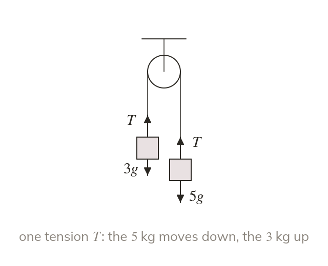
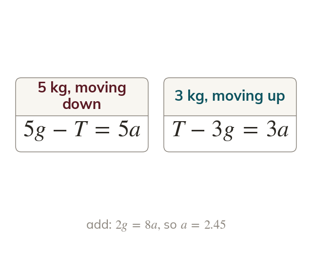
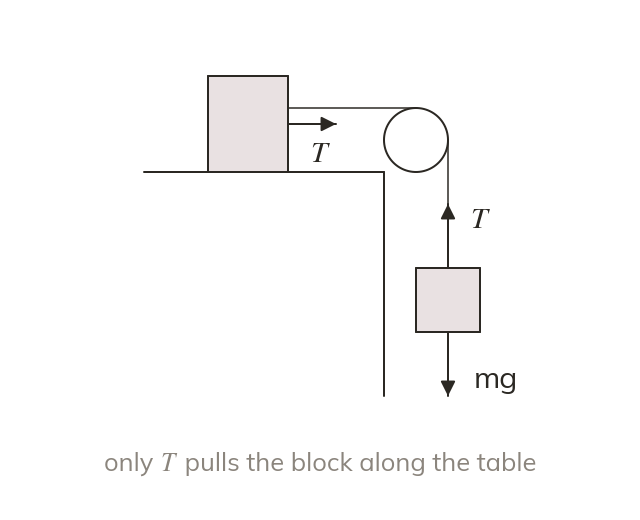
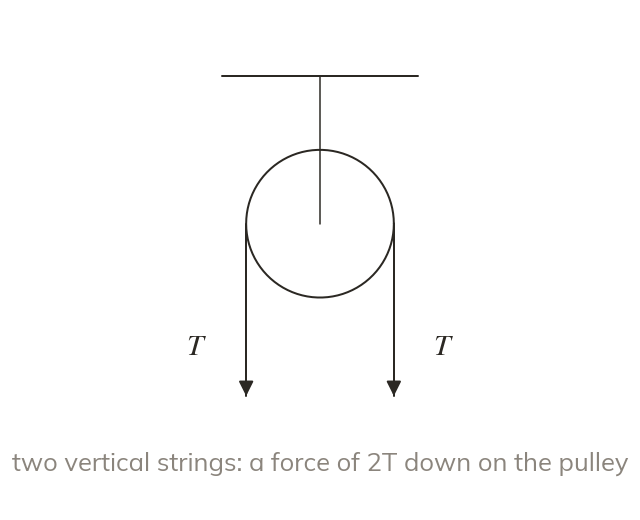
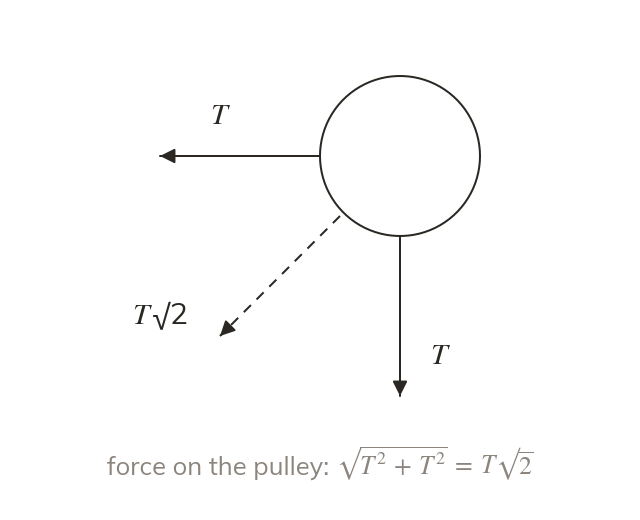
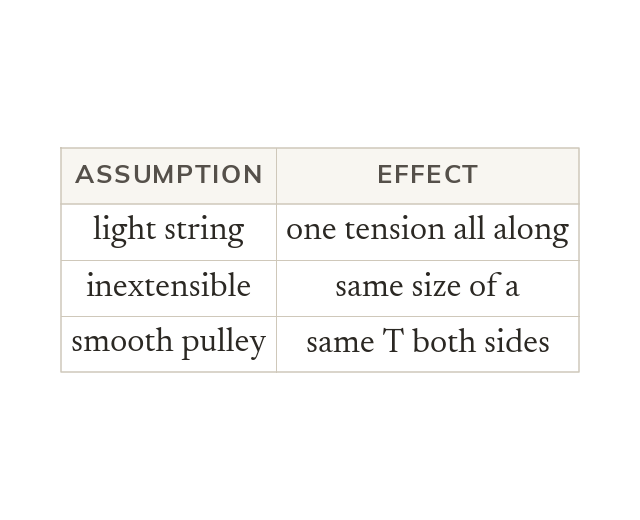

Same tension, same acceleration
Over a smooth pulley, a light inextensible string has the same tension on both sides, and both particles have the same size of acceleration. The heavier particle moves down and the lighter one moves up.
A pulley turns a falling weight into a pull in another direction: lifts, cranes and many exam questions run on it. Writing for each particle in its own direction of motion finds the acceleration and the tension, and next lesson follows the system on after the string goes slack.
Work down the page at your own pace. Write every answer in your book first, then click to check it.
Read each card, then follow the worked examples one step at a time.

Over a smooth pulley, a light inextensible string has the same tension on both sides, and both particles have the same size of acceleration. The heavier particle moves down and the lighter one moves up.

is written for each particle in its own direction of motion. Adding the two equations removes T and gives the acceleration.

When one particle is on a smooth horizontal table, only the tension pulls it along. The hanging particle's weight drives the whole system.
Pick an answer. If it's wrong, the feedback tells you which mistake it was.
Read each card, then follow the worked examples one step at a time.

The string pulls the pulley with both of its tensions, so the force on the pulley is their vector sum. Two vertical strings give a force of 2T downwards.

When one string is horizontal and the other vertical, the force on the pulley comes from Pythagoras, T√2
It acts at below the horizontal, towards the table.

Every modelling assumption makes one step of the method work. State the assumption and the effect it has.
Pick an answer. If it's wrong, the feedback tells you which mistake it was.
Finished? Next lesson: M10.6b Pulleys: When the String Goes Slack.
For each skill, tap the one that is true for you today. Your Revise pages start with anything you mark Not yet.
Your ratings are saved on this device only.
Log in, then search for a code to practise that skill.